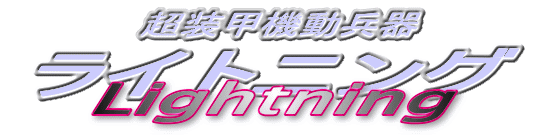

西暦２０ＸＸ年、日本は謎のテロリスト集団の侵攻を受けていた。
政府はこの正体不明の敵を「エネミーＱ」と呼称し、これに対抗するために自衛隊を再編して国防軍を組織する。
国防軍は特別作戦室長の防人巌（さきもり・いわお）大佐の指揮のもと、「エネミーＱ」の人型機動兵器「凶戦士」の奪取作戦を敢行する。
しかし、鹵獲した機体は登録した遺伝子を持たない人物の操縦を拒否するシステムを有しており、その起動は困難を極めた……

作：ライターマン
第二話 「特殊機動部隊出撃」（イラスト：ＭＯＮＤＯ）
第五話 「決戦！！ 敵本拠地攻略（前編）」（イラスト：ＭＯＮＤＯ）
外伝 「それさえもおそらくはそれも平穏な日常」（イラスト：ＭＯＮＤＯ）